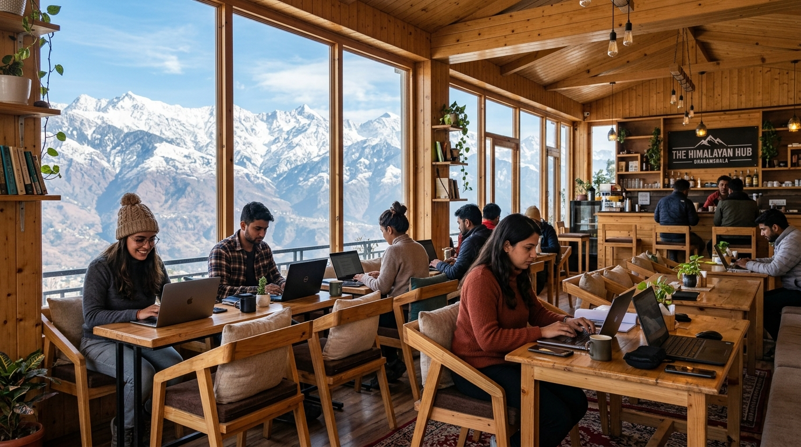

Tech & Innovation
October 12, 2025
•
6 min read
The Mountain Workation Revolution: Why Global Techies Are Choosing Dharamshala & Manali
AK
Arun Katoch
Digital Nomad & Lead Systems Architect

Key Article Highlights
AK
Written by Arun Katoch
Writing on technology democratization, mountain economies, and remote-first workplace culture from Himachal Pradesh.
Share: